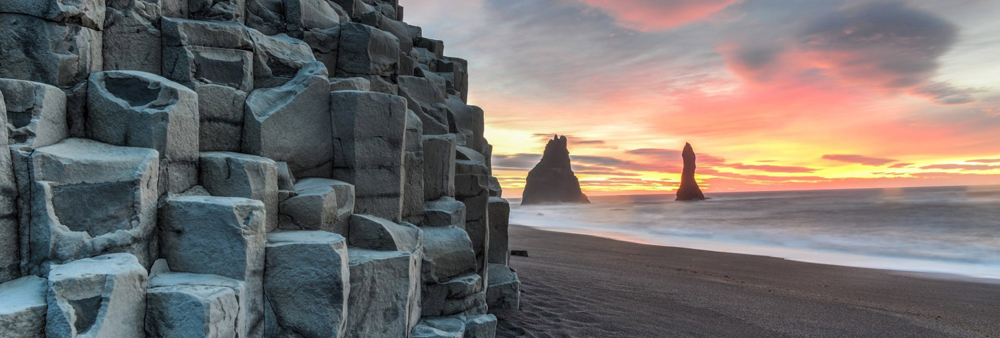

La Laguna Azul (islandés: Bláa lónið) es un balneario geotermal situado al suroeste de Islandia. Se trata de una de las atracciones más visitadas del país, donde las vaporosas aguas son parte de una formación de lava. Las aguas templadas son ricas en minerales como sílice y azufre y bañarse en la Laguna Azul se dice que ayuda a personas que padecen de enfermedades de la piel como la psoriasis.1 La temperatura del agua en el baño y la zona de natación de la laguna tiene una media de 40 °C (104 °F).
La laguna es alimentada por la producción de agua de la cercana planta de energía geotérmica Svartsengi. El agua sobrecalentada surge del terreno cerca de la corriente de lava para mover las turbinas que generan electricidad. Después de pasar por las turbinas, el vapor y el agua caliente pasa a través de un intercambiador de calor para proporcionar calor para el sistema de agua caliente municipal. Luego el agua se alimenta a la laguna para usos recreativos y medicinales.
El balneario se encuentra en un campo de lava en Grindavík en la península de Reykjanes, al suroeste de Islandia. Bláa lónið se encuentra aproximadamente a 13 km del Aeropuerto Internacional de Keflavík y 39 km de la capital de Reikiavik. El balneario y complejo geotermal de la Laguna Azul es claramente visible desde cualquiera de las usuales fuentes de imagen por satélite en las coordenadas (63.879, -22.434).
Islandia tiene un código estricto de higiene y se pide a los clientes que se bañen sin ropa en la ducha comunitaria antes y después de bañarse.
En junio de 2007 la Laguna Azul era color verde, sorprendiendo tanto a residentes y turistas de Islandia.
Reúna dos experiencias islandesas esenciales en una en esta increíble excursión de un día; monta uno de los caballos robustos y encantadores de la nación, y maravíllate con los tres sitios famosos del Círculo Dorado.
Lo recogeremos de Reikiavik por la mañana y nos dirigiremos directamente a la granja de Vellir. Aquí encontrarás a tu guía de equitación y tu corcel por la mañana.
Los caballos islandeses son animales increíblemente especiales. Primero notará que son mucho más pequeños que la mayoría de las otras razas, pero después de unos minutos, verá que eso es lo menos interesante de ellos; también son notablemente más amigables, más inteligentes y más curiosos que otros caballos. Montarlos es una delicia absoluta, incluso para el jinete principiante.
Durante un máximo de dos horas, viajará con su grupo a través de la hermosa y verde campiña, con vistas a las montañas y hasta el océano. El ritmo es agradable y lento para los principiantes.
Después de un paseo vigorizante, almorzará antes de emprender el Círculo Dorado. Su primera parada en este sendero popular es el área geotérmica de Geysir. Aquí, puedes ver un géiser llamado Strokkur que entra en erupción cada 10 minutos aproximadamente, a una altura de hasta 40 m (131 pies). El Geysir ahora en gran parte inactivo también se puede ver, al igual que muchas otras fuentes termales burbujeantes y fumarolas humeantes.
Edgar Allan Poe (Boston, Estados Unidos, 19 de enero de 1809-Baltimore, Estados Unidos, 7 de octubre de 1849) fue un escritor, poeta, crítico y periodista romántico12 estadounidense, generalmente reconocido como uno de los maestros universales del relato corto, del cual fue uno de los primeros practicantes en su país. Fue renovador de la novela gótica, recordado especialmente por sus cuentos de terror. Considerado el inventor del relato detectivesco, contribuyó asimismo con varias obras al género emergente de la ciencia ficción.3 Por otra parte, fue el primer escritor estadounidense de renombre que intentó hacer de la escritura su modus vivendi, lo que tuvo para él lamentables consecuencias.